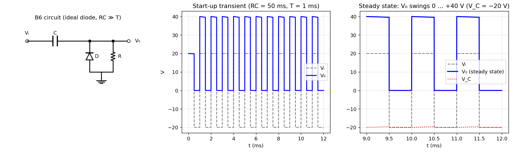

B-Q6 — Diode Clamper
Hub: Tutorial 5 on Diode Circuits and Applications · Previous: B-Q5 - Ideal Diodes with Negative Reference · Next: B-Q7 - Asymmetric Diode Resistor Network

The diode symbol points up (anode to ground, cathode to the node), so the diode conducts whenever tries to go below 0 V. is assumed (the standard clamper condition).
1. Theory
A clamper adds a dc level to the input. With the capacitor in series and a diode to ground:
- Whenever the diode conducts, the output node is held at 0 V (ideal) and the capacitor charges to the voltage at that instant.
- When the diode is OFF, the capacitor cannot discharge appreciably through (since ), so stays constant and follows the input shifted by .
KVL: .
2. Solution
Steady state. When V the diode turns ON, and V (capacitor charged with the source-side plate negative). During the positive half-cycle, stays at V, so
| Interval | Diode | ||
|---|---|---|---|
| first half (positive) | V | OFF | V |
| second half (negative) | V | ON | V |
The output is a square wave between 0 and +40 V: the input's negative peak has been clamped to 0 V (a "positive clamper"), and the waveform keeps the same peak-to-peak value, 40 V.
Start-up transient. If the source starts at V with the capacitor uncharged, the first half-cycle gives V (decaying slowly with ); the capacitor is charged to V in the first negative half-cycle, and from then on the output is 0 / 40 V. In the figure () the steady state is reached after the first cycle.
swings between and V: average value 20 V = the peak of the input, V. Numerical check: the simulated steady-state output has minimum V and maximum V.